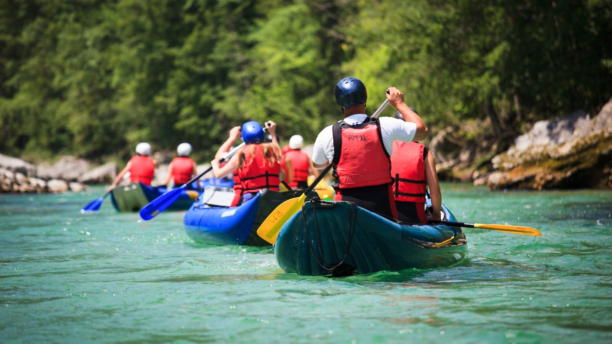
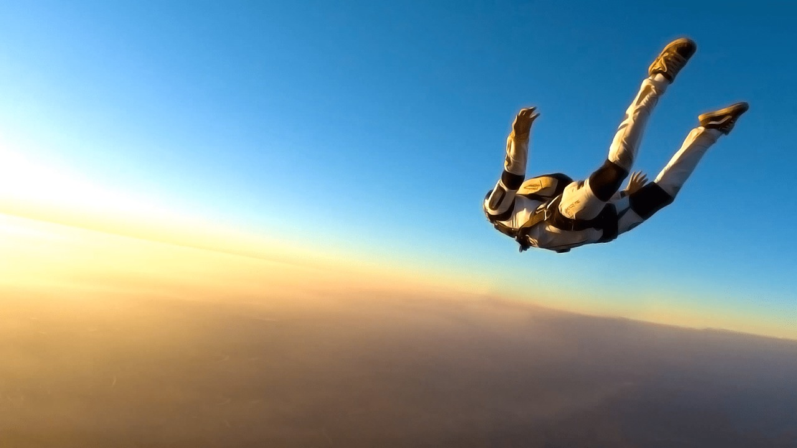
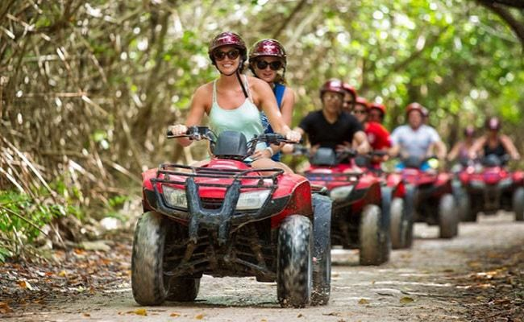
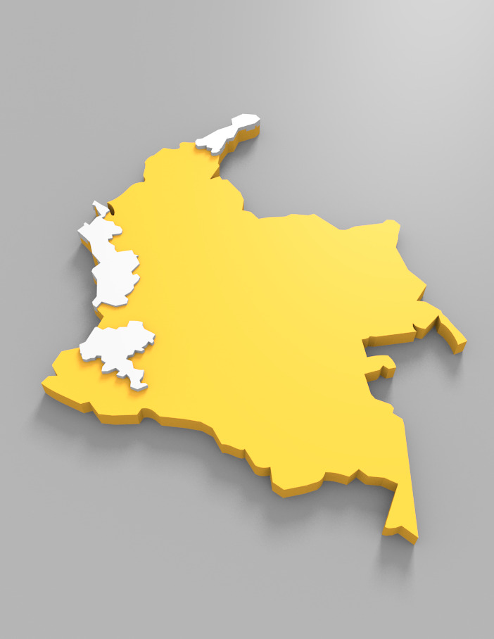
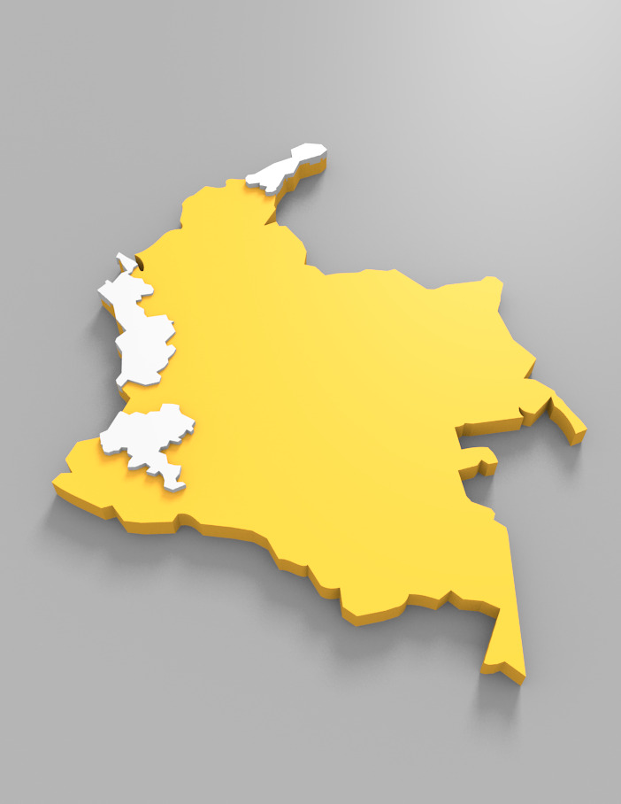

- 
- 
-

- 
 


San Gil (ríos Fonce, Suárez y Chicamocha)
La práctica del rafting no exige gran preparación. Las balsas tienen capacidad para 4 a 8 personas y el nivel de dificultad y riesgo depende de las características del caudal; por lo tanto, lo que más cuenta es conocer a fondo el río.
Río Barragán
La práctica del rafting no exige gran preparación. Las balsas tienen capacidad para 4 a 8 personas y el nivel de dificultad y riesgo depende de las características del caudal; por lo tanto, lo que más cuenta es conocer a fondo el río.
Tobia (Río Negro), Útica, Villeta (Río Negro)
La práctica del rafting no exige gran preparación. Las balsas tienen capacidad para 4 a 8 personas y el nivel de dificultad y riesgo depende de las características del caudal; por lo tanto, lo que más cuenta es conocer a fondo el río.
San Agustín (río Magdalena)
La práctica del rafting no exige gran preparación. Las balsas tienen capacidad para 4 a 8 personas y el nivel de dificultad y riesgo depende de las características del caudal; por lo tanto, lo que más cuenta es conocer a fondo el río.
Tumaco (Rio Mira)
El descenso de ríos o balsismo o rafting consiste en navegar río abajo, en una balsa neumática (raft), por ríos con secciones turbulentas o “rápidos”.
Punta Gallinas
El barranquismo es un deporte practicado en entornos remotos y accidentados como los barrancos o los cañones o de un río, y consiste en recorrerlos caminando, nadando, trepando, destrepando, etc., por terrenos muy variados, de vegetación abundante o rocosos, con poco caudal o secos.
Turismo ecológico, avistamiento de cetáceos
El barranquismo es un deporte practicado en entornos remotos y accidentados como los barrancos o los cañones o de un río, y consiste en recorrerlos caminando, nadando, trepando, destrepando, etc., por terrenos muy variados, de vegetación abundante o rocosos, con poco caudal o secos.
Minas (Jamundí); Vijes; Dapa
El barranquismo es un deporte practicado en entornos remotos y accidentados como los barrancos o los cañones o de un río, y consiste en recorrerlos caminando, nadando, trepando, destrepando, etc., por terrenos muy variados, de vegetación abundante o rocosos, con poco caudal o secos.
Peña de las Águilas ; Puente campana
El equipo de seguridad del deportista consta de arnés, guantes y casco. Durante el recorrido la cuerda por la que va la persona es sostenida por el experto, quien hace contrapeso y le va dando indicaciones al escalador.
Roca del Peñol (Guatapé); La Peña (Abejorral); Maceo
El equipo de seguridad del deportista consta de arnés, guantes y casco. Durante el recorrido la cuerda por la que va la persona es sostenida por el experto, quien hace contrapeso y le va dando indicaciones al escalador.
Rocas de Juntas (río Cobeima); Rocas del río Cobre (Payandé)
El equipo de seguridad del deportista consta de arnés, guantes y casco. Durante el recorrido la cuerda por la que va la persona es sostenida por el experto, quien hace contrapeso y le va dando indicaciones al escalador.

Cerros de Mavecure
El equipo de seguridad del deportista consta de arnés, guantes y casco. Durante el recorrido la cuerda por la que va la persona es sostenida por el experto, quien hace contrapeso y le va dando indicaciones al escalador.

Sabana del Ariari
El equipo de seguridad del deportista consta de arnés, guantes y casco. Durante el recorrido la cuerda por la que va la persona es sostenida por el experto, quien hace contrapeso y le va dando indicaciones al escalador.

Cerros de Mavecure
El equipo de seguridad del deportista consta de arnés, guantes y casco. Durante el recorrido la cuerda por la que va la persona es sostenida por el experto, quien hace contrapeso y le va dando indicaciones al escalador.

Leticia, Aventura salvaje
El equipo de seguridad del deportista consta de arnés, guantes y casco. Durante el recorrido la cuerda por la que va la persona es sostenida por el experto, quien hace contrapeso y le va dando indicaciones al escalador.

El cañon del chicamocha, San gil
Te ofrecemos la capacitación y te proporcionamos los mejores instructores para que cada día los practiques con mayor seguridad y disfrutes mas tu vista sin preocuparte por abrir el paracaídas.

Guatape,Antioquia
Deporte que consiste en lanzarse desde un avión, helicóptero o avioneta en vuelo y descender hasta el suelo frenando y dirigiendo su caída con un artefacto de tela (paracaídas) que se infla en el aire. El cuelga de unas cuerdas que unen el paracaídas con su arnés. Se realiza a un mínimo de 850 metros de altura y a un máximo de 4 mil metros. Se puede realizar en compañía de un instructor, denominándose vuelos dobles o tándem.

Guasca
Saltarás completamente asegurado al instructor a 10.000 pies de altura desde una aeronave en perfecto estado, observando lugares como Girardot, Tolemaida, Flandes, Tocaima, San Marcos, Rio Magdalena, Rio Bogotá, cordilleras y a veces podrás ver los nevados del Tolima y del Ruiz, para después lanzarte con tu instructor mientras te van tomando un vídeo de toda la experiencia de vuelo.

Flandes
Despégate se unen para llevarte a hacer realidad tu sueño. La zona de salto está ubicada en Flandes, dos horas* al sur de Bogotá Cundinamarca.

Taminango, Nariño-Corregimiento Puerto Remolino
En NARIÑO SALTO TANDEM EN PARACAIDAS de la caída libre enganchado con un instructor a un paracaídas para dos personas, a una altura de 10.000 pies y una velocidad de 250kms/h, en caída libre aproximadamente 30 segundos con el paracaídas abierto aproximadamente 12 a 15 minutos. Solo se necesitan 10 minutos de instrucción y tienes la posibilidad de tener un video del salto.

Integración en La Guajira 🇨🇴 Una opción de viaje en grupo y la combinación perfecta entre Playa, Desierto, cultura y muy buena gastronomía.
Quieres sentir adrenalina en tus venas? deja la rutina diaria y ven y disfruta de un salto Bungee Jumping a 40 metros de altura y luego disfruta de un buen descanso en nuestra sede con el servicio de piscina.
Santa Elena, El Cerrito
En la actividad de Puenting el practicante se lanza al vacío sin que nada, tan solo una cuerda, lo sujete al mundo, y así experimentar sensaciones únicas. Se trata sin duda de una actividad que nos acerca como ninguna a un aparente peligro, que sin embargo no es tal, pues, a pesar de lo que pueda parecer, es extraordinariamente seguro. El Puenting solo requiere un momento de decisión anterior al salto, lo demás es pura adrenalina.
El cañon del Magdalena
Vuelos en parapente sobre el cañón del magdalena y valle de los laboyos, disfruta con los mejores pilotos de esta experiencia llena de adrenalina.
Bolívar, Zarzal, Ricaurte, Huasano, La Paila
“Volar en parapente es enamorarse de la sensación de libertad y de sentir por un pequeño instante, la magia de flotar en el aire y tener el mundo a tus pies”. Una experiencia completa de turismo en Santander involucra un paseo por la majestuosidad de sus cielos.
Ibague,Libano
Disfruta de una emocionante experiencia alrededor de la reserva forestal Parque Pionono y el Cerro Las Águilas; frailejones, el embalse de Tominé y hermosos bosques serán los protagonistas. No te quedes viendo, vuela!
Comenzando en 1996 a explorar los sitios más propicios para el vuelo libre sobre la cordillera oriental de nuestro País en el piedemonte llanero. Es nuestro interés participarles la gratificación del sueño de volar que muy gentilmente otros pilotos con grandes sacrificios se esmeraron dejándonos un legado de fe y esperanza en poder lograr lo que la mayoría de seres humanos a temprana edad hemos querido realizar VOLAR.
El departamento de Vaupés se encuentra localizado en la Amazonía colombiana y con una superficie de 54.135 km2 se ubica en el puesto 7 entre los departamentos con mayor extensión del país. Vaupés tiene una temperatura que oscila entre los 25º y 30º C. El departamento está dividido en 3 municipios, 3 corregimientos departamentales y 2 corregimientos municipales.

Reserva nacional natural Puinawai
Vuela con parapente La Unión La actividad se inicia con una charla técnica donde se contaran todos los aspectos a tener en cuenta en el vuelo, esta se realiza..

Puerto Nariño,Leticia
Estamos preparado para brindarle una experiencia inolvidable desde la Amazonia con su llegada hasta su aterrizaje, para que entre amigos y en familia, puedan sentir la magia que ofrece el vuelo libre